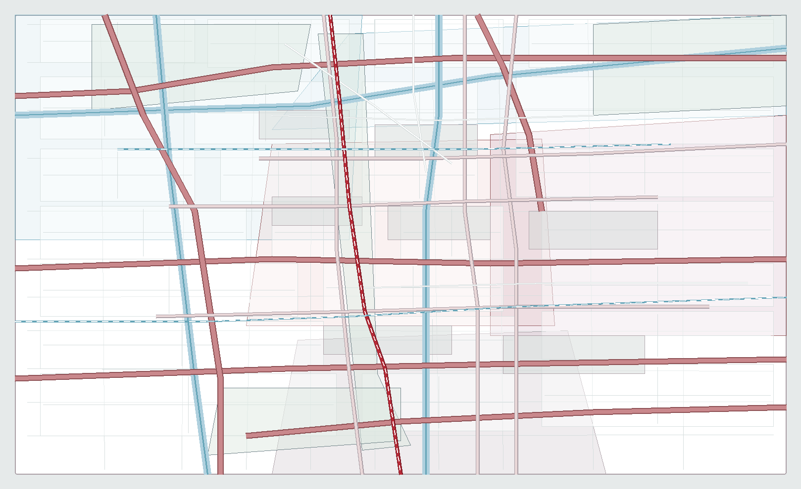
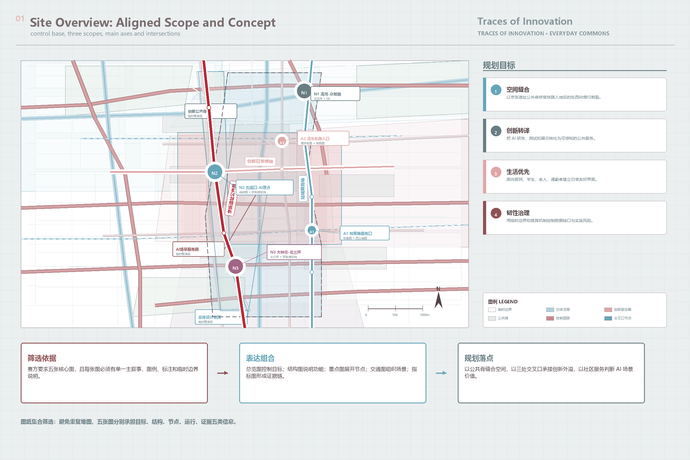
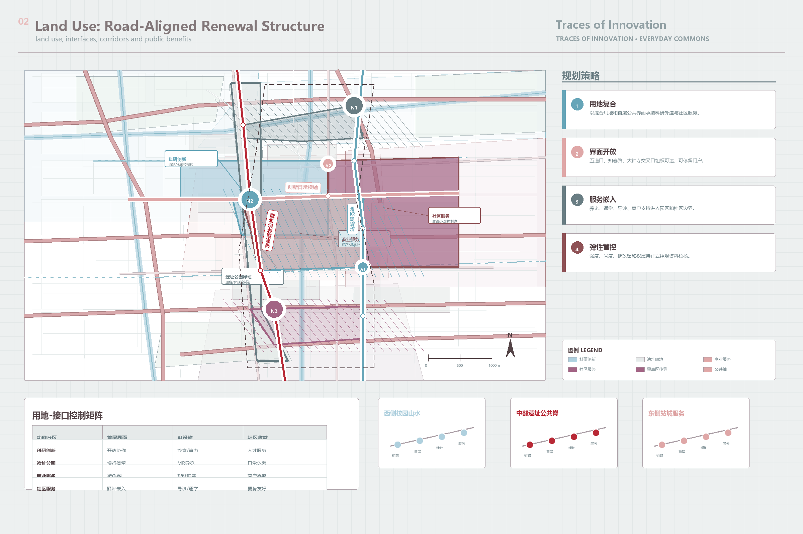
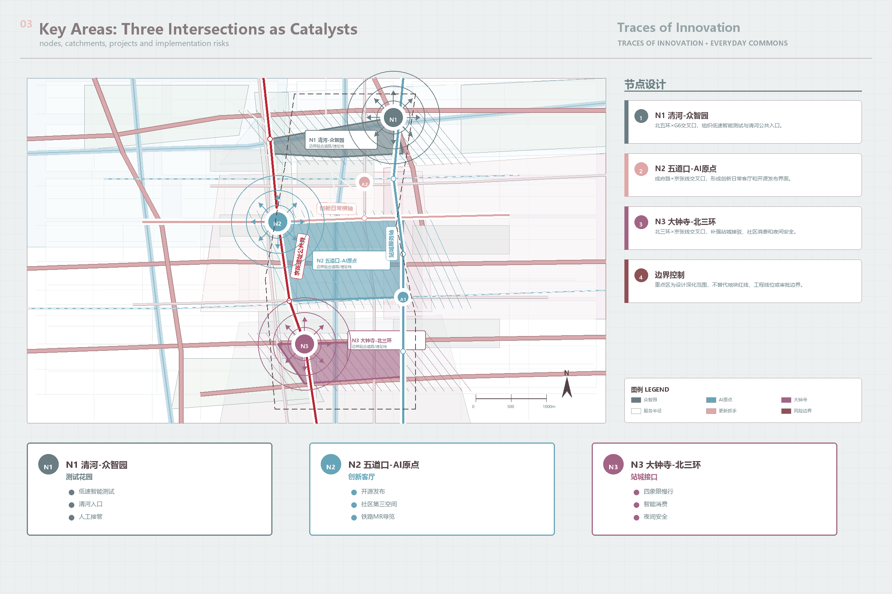
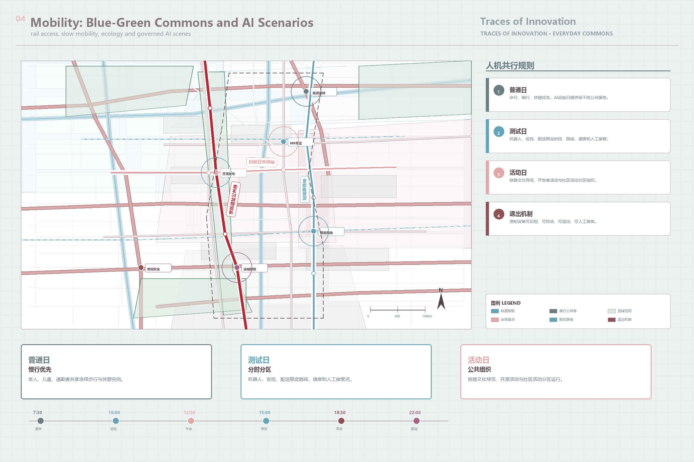
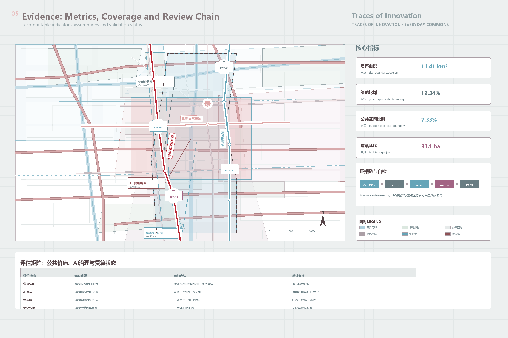

site_area_sqm11,412,825.386
green_ratio0.123423
public_space_ratio0.073281
Planning goals · Strategies · Significance · Three-level scope · Key areas · Land use · Mobility · Blue-green public space · AI scenarios · Core metrics · Task coverage · Self-check





